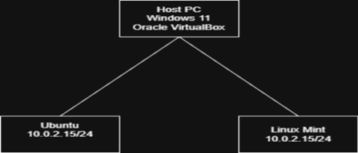
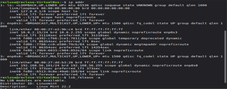
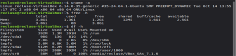

This week focused on planning the operating system deployment and defining the system architecture.
The aim was to establish a clear baseline for the environment that will be used throughout the
remaining weeks (security hardening, testing, optimisation, and auditing).
Key Activities
System architecture design (host + VirtualBox + VM)
Distribution selection and justification
Network configuration planning
Initial system information gathering (baseline commands)
Baseline Evidence
The following command outputs and diagram provide the baseline system identification, resource
overview, and network addressing required for Week 1. These will be used as reference points for
later weeks when changes are made to configuration and performance.
Evidence Screenshots

Baseline system specifications and resources (uname -a, free -h, df -h).

Network configuration and OS version evidence (ip addr, lsb_release -a).

Architecture diagram showing the host system, VirtualBox, and Linux VM environment.